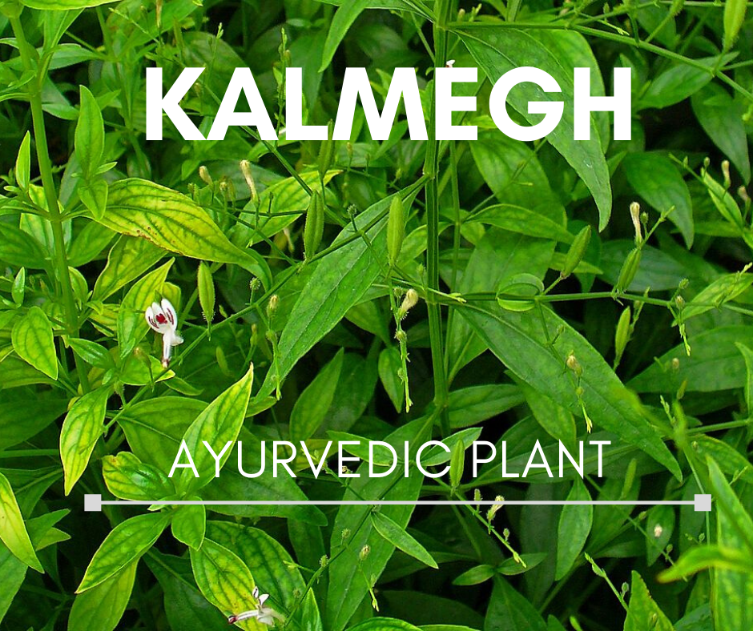
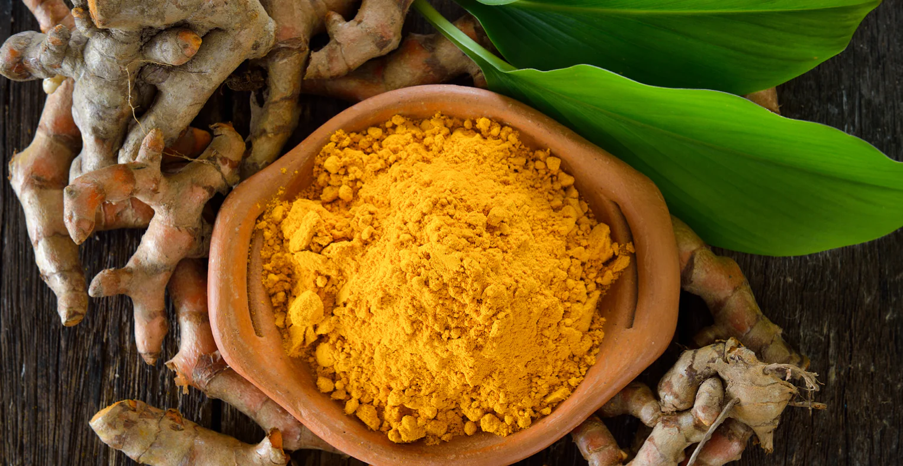
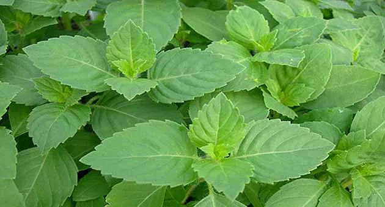
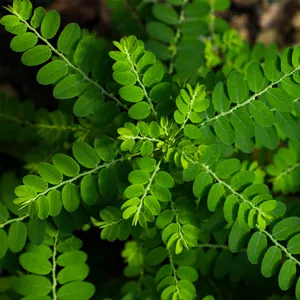

Medicinal Plant Report
Japanese Encephalitis Virus (JEV)
1. Andrographis paniculata (Kalmegh)
Active compounds: Andrographolide, Neoandrographolide
Mechanism: Inhibits viral RNA synthesis, shows anti-inflammatory effects.
Evidence: In vitro studies confirm JEV replication inhibition.
Traditional Use: Used in Ayurveda and TCM for viral infections.
2. Azadirachta indica (Neem)
Active compounds: Nimbin, Azadirachtin, Gedunin
Mechanism: Inhibits viral entry and boosts immunity.
Evidence: Protective in animal models with encephalitis.
Traditional Use: Used in Indian medicine for fevers and infections.

3. Curcuma longa (Turmeric)
Active compounds: Curcumin
Mechanism: Reduces neuroinflammation, may inhibit JEV replication.
Evidence: Reduces brain damage in JEV-infected mice.
Traditional Use: Used in Ayurveda for treating inflammation.
4. Ocimum sanctum (Tulsi / Holy Basil)
Active compounds: Eugenol, Ursolic acid, Rosmarinic acid
Mechanism: Modulates immune response and oxidative stress.
Evidence: Shows antiviral and neuroprotective effects.
Traditional Use: Used for viral and respiratory ailments.
5. Phyllanthus niruri (Bhumi Amla)
Active compounds: Phyllanthin, Hypophyllanthin
Mechanism: Inhibits viral enzymes, supports immune function.
Evidence: Active against flaviviruses like Dengue, potential against JEV.
Traditional Use: Used in liver and viral disease treatments.
